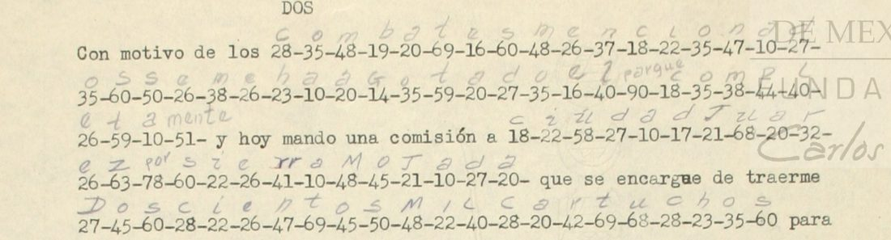

At a glanceExisting decipherment · complete
- The letter
- A typed report signed “El General, Fran.co Murguía”, “Campamento en Lamadrid, Marzo 16 de 1914”, to General Pablo González, head of the Division of the Northeast, at Matamoros, in clear Spanish with 23 coded runs; pages 3 and 4 are a typed copy headed “CLAVE EXTRA 3.” with the plain text written in pencil over the figures.
- Where
- CEHM-Carso, Mexico City, Fondo LXVIII-1 (General Pablo González), LXVIII-1.14.1943.1, four images. No DECODE record is cited in the notes. Part of catalogue entry 1465, whose catalogue record calls the item “part coded” and does not mention the pencil decipherment.
- The cipher
- Two-figure groups 10 to 99. Letters go by the units figure inside three blocks of tens (for example 20 = a, 29 = b, 28 = c), each letter having two groups; 51 is -mente and groups 78 to 99 are words (78 por, 82 enemigo, 87 para, 90 parque, 91 la, 96 de, 99 que; 88 and 97 have no value).
- How it was read
- The figures were transcribed twice (487 of 488 groups agree between the two exemplars), the key was built from figures and pencil, and a key built from page 3 alone agreed with the pencil on 84.2% of the letters of page 4 (shuffled keys at most 15.4%). The reading was then made from the figures.
- What it says
- Murguía reports his campaign of 4 to 15 March 1914 around Monclova, which he took with Castro on the 10th and lost on the 11th; his ammunition is spent and he is sending a commission to Ciudad Juárez for 200,000 cartridges.
- Still open
- Groups 88 and 97 (one occurrence each, not glossed): the key is partial. The strict share, 99 of 104 coded words, is just above the 95% bar; the contributor’s figure is 96.1%. Two words carry a marked added letter and two are guesses.
- Credit
- The plain text is first the work of a contemporary hand, the pencil gloss. Transcription, key and reading from the figures by WAINUT (a Dutch AI company) with AI language-model agents; no human palaeographer checked the text. The project re-ran the scripts, decoded every run with its own decoder and compared the 217 groups of page 4 with the image.
01 The letter
The report is addressed to the commander of the Division of the Northeast and dated at Murguía’s camp at Lamadrid on 16 March 1914. Pages 1 and 2 of the item are the typed report with its coded runs; pages 3 and 4 are a typed copy headed “CLAVE EXTRA 3.” in red, in which a contemporary hand has written the plain text in pencil, letter by letter, over the figures (gloss_LXVIII-1.14.1943.1.txt). The copy writes every clear number in words but keeps the groups as figures. The pencil leaves two groups, 88 and 97, without a value.

02 The key
The cipher is a table of two-figure groups read by the units figure: tens 1 and 2 give a0 b9 c8 d7 e6 f5 g4 h3 i2 j1; tens 3 and 4 give l0 ll9 m8 n7 ñ6 o5 p4 q3 r2 rr1; tens 5 and 6 give s0 t9 u8 v7 y4 z3. Each letter thus has two groups, one for each tens figure of its pair. The word groups are 51 (-mente), 78 por, 82 enemigo, 87 para, 90 parque, 91 la, 96 de and 99 que; with the two open groups 88 and 97 they occur 19 times, as 10 distinct groups.
The key file has 62 entries: 45 from aligning the figures with the pencil letters (dynamic programming, majority value), 5 set by hand where the aligner split a word group wrongly (46, 49, 87, 91, 99), 10 not attested in any pair and filled from the table layout (11, 13, 15, 25, 31, 33, 36, 39, 43, 53; none of them occurs in this letter) and 2 open (88, 97). The 60 with a value were frozen on 12 November 2026, by the contributor’s record, before two bare sheets of the same fondo were decrypted with them.
03 The test
A key built from the page 3 segments (S01 to S15) only, frozen, was applied to the page 4 segments (S16 to S23, 217 groups) and compared with the pencil gloss there: 0.842 letter agreement over its 240 letters (one minus edit distance over gloss length), against at most 0.154 for 200 keys with the same values shuffled among the groups (mean −0.036). The errors come from 8 groups that page 3 does not contain and from two word groups the page 3 alignment got wrong. The project re-ran the script and got the same figures. Because the key was built from the pencil gloss and the test is scored against the same gloss, this is a test of the key, not an independent decipherment; the contributor’s freezing order is by the contributor’s record (one commit, no outside timestamp).
The project’s own statistical check of the frozen key on the 486 groups with a value gives −2.104 per letter in a Spanish 4-gram model, against −6.186 on average for 200 keys with the same values shuffled (z 9.3) and −3.566 for keys annealed onto shuffled text (z 17.5): verdict pass.
04 The reading
The coded runs as read from the figures with the key (marks: {+a} a letter the encipherer left out; [?w:NN] a guess for group NN):
destruí la vía del naci{+o}nal · cortando dos trenes · ligero tiroteo · enemigo · bastante numeroso · retirándome · la carroza · monclova había poco enemigo · nos atacó el enemigo que en número de más de mil hombres venía de · replegarnos a san buenaventura · y me retiré al molin{+o} del águila · [?no:97] habiéndonos · tomar la [?plaza:88] ser el enemigo en número muy · replegarnos hasta · de reorganizarnos · combates mencionados se me ha agotado el parque completamente · ciudad juárez por sierra mojada · doscientos mil cartuchos · vengan esas municiones lo más pronto posible · pienso permanecer hasta que venga el parque · continuar la campaña · mi estancia en ella para organizarme · aumentar mi tropa
In English: on 4 March Murguía destroyed the line of the National Railway between Golondrinas and Huisachito, cutting two military trains and sustaining a light skirmish with a fairly numerous enemy, then withdrew to the pass of La Carroza. There he learned that Monclova held few of the enemy, and with General Castro he attacked the place on the 10th and took it after fourteen hours. On the 11th the enemy, more than a thousand men from Monterrey, attacked; he fell back to San Buenaventura and, attacked there on the 14th, withdrew to the Molino del Águila to attack again on the 15th with Castro. He did not succeed in taking the place because the enemy was in very great numbers, and fell back to Lamadrid to reorganise. The fighting has used up his ammunition completely; he is sending a commission to Ciudad Juárez by Sierra Mojada to bring 200,000 cartridges, asks General Chao to send them as soon as possible, and means to stay until they come, to continue the campaign, reorganise and increase his troops. (The clear parts of the letter, such as the 235 prisoners and the names of some, are in the repository file.)
Where the figures and the pencil differ, the reading follows the figures: NACINAL (the pencil has Nacional), CORTANDO (cruzando), MOLIN (molino), ESAS (estas) and EN ELLA (en el). Counted by the README rule: 103 coded words, of which 99 are read as typed, 2 carry a marked added letter (NACI{+O}NAL, MOLIN{+O}) and 2 are guesses (groups 97 and 88); the word “[por]” before ser is one the sense needs and the figures do not give, supplied and counted as not read. So 99 of 104 words, 95.2%: at the bar, so the letter is read; the contributor’s own figure, 99 of 103 (96.1%), leaves “[por]” out. The reading reads as continuous sentences and an independent AI reader graded it A.
05 What remains uncertain
- Groups 88 and 97: one occurrence each and not glossed. The sense suggests “plaza” (or “plaza por”) and “no”; they stay guesses, and the key is partial (open codes).
- Group 22 of segment S11 is over-struck in both exemplars (58 or 68); both are u in the key, so the reading does not depend on it (illegible).
- The test uses the pencil gloss as truth and the key was built from the same gloss, and the freezing order is by the contributor’s record; the sentences of the letter, the held-out agreement and the 95.2% are the evidence, not an independent decipherment.
- Transcription: two passes by the contributor agree at 487 of 488 places; a blind AI agent compared 59 groups of page 4, all agree; the project compared all 217 groups of S16 to S23 with the image of page 4, all agree. The original pages 1 and 2 and page 3 were not compared by the project. No human palaeographer has checked the figures.
- Prior work as far as searched (12 to 13 Nov 2026): the only decipherment found is the pencil gloss on the item itself. Narváez’s 2025 article on Constitutionalist ciphers (the PDF answered 403 to a script), his 2019 book and M. W. González’s Con Carranza were not read and may print the table or the text; whether Clave Extra 3 appears there is not checked.
Full texts
The transcription and the decryption of every document on this page, so that the reading can be used and checked. Short files are shown here; all are in the repository.
Murguía to González, Lamadrid, 16 Mar 1914
Murguía reports his campaign of 4-15 March 1914: the Nacional railway cut between Golondrinas and Huisachito, Monclova taken with Castro on the 10th and lost on the 11th to more than a thousand men from Monterrey, a fall-back to San Buenaventura and the Molino del Águila, a failed attack on the 15th and a retreat to Lamadrid; his ammunition is spent and he is sending a commission to Ciudad Juárez by way of Sierra Mojada for 200,000 cartridges.
Transcription
transcription_LXVIII-1.14.1943.1.txt
# CEHM LXVIII-1.14.1943.1, Francisco Murguía to Pablo González, Campamento en Lamadrid, Coah., 16 March 1914. # Reconciled figure transcription. Pass 1 = original typed letter pp. 1-2 (scan pages 0001-0002); # pass 2 = the typed copy headed "CLAVE EXTRA 3." pp. 3-4 (0003-0004), read from fresh crops. # The two passes (two exemplars) give the same group at 487 of 488 places; the one difference, S11 g22, # is over-struck in both exemplars (58 or 68, both u in the key; see notes). Other differences are typing over-strikes. # Format: segment<TAB>clear words before | groups | clear words after S01 el dia 4 del presente | 27-16-60-59-42-58-22-91-67-12-10-17-26-40-37-10-18-22-47-20-30 | entre Golondrinas y Huisachito S02 Huisachito, | 18-45-32-69-20-37-27-35-27-35-60-59-32-26-37-16-60 | militares y sosteniendo un S03 sosteniendo un | 40-22-24-16-32-45-69-22-32-45-59-26-35 | con el S04 con el | 16-37-26-48-22-24-35 | que era S05 que era | 29-10-60-59-20-37-69-26-47-68-38-16-42-35-60-35 | (continues) S06 (continues) | 42-26-69-12-42-10-37-27-45-48-16 | luego al puerto de S07 puerto de | 91-18-10-41-35-63-10 | alli tuve noticias de que en S08 de que en | 48-35-37-18-40-45-67-10-23-20-19-12-20-44-35-28-35-82 | y de acuerdo con sus instrucciones S09 el dia 11 por la tarde | 47-35-60-10-69-20-28-35-16-40-82-99-16-37-47-68-48-26-32-45-96-38-10-60-96-48-22-40-23-35-48-29-42-16-60-67-26-37-22-10-96 | Monterey S10 y tuvimos que | 42-26-44-30-26-14-10-42-37-45-60-10-50-20-37-19-58-26-37-20-57-26-37-69-68-42-10 | en donde nuevamente S11 el dia 14, | 64-48-26-42-16-69-22-32-26-10-30-48-45-30-22-37-27-16-30-10-14-58-22-40-10 | para tomar el dia siguiente S12 lo cual hicimos, | 97-23-10-19-12-26-37-17-45-37-35-60 | sido posible S13 sido posible | 69-35-38-10-42-40-10-88-60-16-42-26-40-82-26-37-47-68-38-16-32-45-48-58-54 | considerable, S14 teniendo que | 42-16-44-40-26-14-10-32-47-35-60-23-10-50-59-20 | este lugar con objeto S15 lugar con objeto | 96-32-16-45-42-14-20-37-22-63-10-42-37-35-60 | . / punto S16 Con motivo de los | 28-35-48-19-20-69-16-60-48-26-37-18-22-35-47-10-27-35-60-50-26-38-26-23-10-20-14-35-59-20-27-35-16-40-90-18-35-38-44-40-26-59-10-51 | y hoy mando una comision a S17 una comision a | 18-22-58-27-10-17-21-68-20-32-26-63-78-60-22-26-41-10-48-45-21-10-27-20 | que se encargue de traerme S18 de traerme | 27-45-60-28-22-26-47-69-45-50-48-22-40-28-20-42-69-68-28-23-35-60 | para lo cual me dirijo S19 los medios de que | 67-26-47-24-10-37-26-60-10-50-48-68-37-22-18-12-45-37-26-50-40-35-48-10-60-44-32-35-47-69-45-34-45-60-22-29-40-16 | y le suplico S20 En esta region | 34-22-26-47-60-45-34-26-42-48-10-37-26-18-16-42-23-10-60-59-20-99-57-26-37-24-10-26-40-90 | a que me he referido S21 he referido para | 28-35-47-69-22-37-58-20-42-91-28-10-38-34-10-46-20 | y aprovechare S22 y aprovechare | 48-22-26-60-59-10-37-28-12-20-16-37-26-49-10-87-45-42-24-10-37-22-63-10-32-48-26 | debidamente S23 debidamente y | 10-68-48-26-47-69-10-42-38-22-59-32-35-44-10 | en lo que sea posible. # Notes on the image: # S02: the last group 60 stands at the start of the next line before "militares" in both exemplars. # The copy (pp. 3-4) writes every clear number in words (cuatro, nueve, catorce, once, quince, # DOCIENTOS TREINTA Y CINCO) but keeps "60" as figures; it is taken as a cipher group. # p. 3 shows over-strikes on the 2nd and 4th groups (45, 69); p. 1 has them clean. # S03, S05, S09: "6922", "6838", "2942" typed without hyphen on p. 3; p. 1 has the hyphens. # S04, S09, S15: over-strikes on a 3x group (37) on p. 1; p. 3 clean 37. # S11: 22nd group over-struck in both exemplars; the lower figure reads 5 or 6 (58 or 68, both u in the key). Written 58. # S19: p. 3 types "60A10" (hyphen over-struck); p. 1 "60-10". No group is lost. # S21: "46" over-struck on p. 1 (4 struck over another figure); p. 3 clean 46. # S22: p. 3 "24-1037" (hyphen dropped); p. 1 "24-10 / 37".
Decipherment of the time
# Contemporary pencil interlinear decipherment on the typed copy (scan pages 0003-0004), as written # (spelling and word division of the hand kept; small inserted words in brackets). S01 Destruila via del Nacional S02 cruzando dos trenes S03 ligero tiroteo S04 enemigo S05 bastante numeroso S06 retirandome S07 la carroza S08 Monclova habizapoco enemigo S09 Nos atacoel enemigo que en numero de mas de mil hombres venia de S10 Replegarnos a San Buenaventura S11 y me retire al molino del Aguila S12 habiendonos S13 Tomar la Sere enemigo ed numero muy S14 Replegarnos hasta S15 Dereorganizarnos S16 combates mencionados se me ha agotado el parque completamente S17 ciudad Juarez por sierra mojada S18 Doscientos mil cartuchos S19 vengan estas municiones lo mas pronto posible S20 pienso permanecer hasta que venga el parque S21 continuar la campaña S22 Mi estancia en el para organizarme S23 aumentar mi tropa
Decryption
decryption_LXVIII-1.14.1943.1.txt
# Mechanical decryption with key_frozen.tsv (scripts/decrypt.py); capitals = word codes; [NN] = unread or unidentified group S01 destruilaviadelnacinal # 21 groups, 0 unread/unidentified S02 cortandodostrenes # 17 groups, 0 unread/unidentified S03 ligerotiroteo # 13 groups, 0 unread/unidentified S04 enemigo # 7 groups, 0 unread/unidentified S05 bastantenumeroso # 16 groups, 0 unread/unidentified S06 retirandome # 11 groups, 0 unread/unidentified S07 lacarroza # 7 groups, 0 unread/unidentified S08 monclovahabiapocoENEMIGO # 18 groups, 0 unread/unidentified S09 nosatacoelENEMIGOQUEennumerodemasdemilhombresveniade # 41 groups, 0 unread/unidentified S10 replegarnosasanbuenaventura # 27 groups, 0 unread/unidentified S11 ymeretirealmolindelaguila # 25 groups, 0 unread/unidentified S12 [97]habiendonos # 12 groups, 1 unread/unidentified S13 tomarla[88]serelENEMIGOennumeromuy # 25 groups, 1 unread/unidentified S14 replegarnoshasta # 16 groups, 0 unread/unidentified S15 dereorganizarnos # 15 groups, 0 unread/unidentified S16 combatesmencionadossemehaagotadoelPARQUEcompletaMENTE # 44 groups, 0 unread/unidentified S17 ciudadjuarezPORsierramojada # 24 groups, 0 unread/unidentified S18 doscientosmilcartuchos # 22 groups, 0 unread/unidentified S19 venganesasmunicioneslomasprontoposible # 38 groups, 0 unread/unidentified S20 piensopermanecerhastaQUEvengaelPARQUE # 30 groups, 0 unread/unidentified S21 continuarlacampaña # 17 groups, 0 unread/unidentified S22 miestanciaenellaPARAorganizarme # 27 groups, 0 unread/unidentified S23 aumentarmitropa # 15 groups, 0 unread/unidentified
Reading
# Reading of Murguía's report to Pablo González, Lamadrid, 16 March 1914 (CEHM LXVIII-1.14.1943.1)
Clear text from the original typed letter (pp. 1-2). Coded text in capitals, decrypted with `key_frozen.tsv`. Accents, punctuation and word division are mine. Marks: `{x/y}` the key gives x, the reading takes y; `{+a}` a letter the encipherer left out; `[?w:NN]` a guess for group NN. A contemporary pencil decipherment stands over the coded groups of the typed copy (pp. 3-4, headed "CLAVE EXTRA 3."); this reading was made from the figures and the key, and the places where it differs from the pencil gloss are listed at the end.
> Hónrome en comunicar á Ud. el resultado de mi campaña hasta la fecha, después de la acción de Rodríguez de la que oportunamente dí á Ud. cuenta; manifestándole que el día 4 del presente DESTRUÍ LA VÍA DEL NACI{+O}NAL entre Golondrinas y Huisachito, CORTANDO DOS TRENES militares y sosteniendo un LIGERO TIROTEO con el ENEMIGO, que era BASTANTE NUMEROSO, RETIRÁNDOME luego al puerto de LA CARROZA. Allí tuve noticias de que en MONCLOVA HABÍA POCO ENEMIGO, y de acuerdo con sus instrucciones y en combinación con el General Castro ataqué esta plaza el día 10 del actual, después de batir el 9 una partida de 125 federales en Carrizalejo, que fué dispersada y se remontó á la sierra de la Gloria. La plaza de Monclova, después de 14 horas de rudo combate, quedó en nuestro poder, habiendo tenido combates parciales por rumbo de Castaño, de Ciénegas y Las Estancias, con el enemigo que procedente de Monterrey, Ciénegas y Piedras Negras trataba de auxiliar al de la plaza atacada.
>
> El día 11 por la tarde NOS ATACÓ EL ENEMIGO, QUE EN NÚMERO DE MÁS DE MIL HOMBRES VENÍA DE Monterrey, y tuvimos que REPLEGARNOS A SAN BUENAVENTURA, en donde nuevamente fuí atacado el día 14, Y ME RETIRÉ AL MOLIN{+O} DEL ÁGUILA para tomar el día siguiente 15, en combinación con el compañero Castro, y atacar dicha plaza, lo cual hicimos. [?NO:97] HABIÉNDONOS sido posible TOMAR LA [?PLAZA:88] [por] SER EL ENEMIGO EN NÚMERO MUY considerable, teniendo que REPLEGARNOS HASTA este lugar con objeto DE REORGANIZARNOS.
>
> Con motivo de los COMBATES MENCIONADOS SE ME HA AGOTADO EL PARQUE COMPLETAMENTE, y hoy mando una comisión á CIUDAD JUÁREZ POR SIERRA MOJADA que se encargue de traerme DOSCIENTOS MIL CARTUCHOS, para lo cual me dirijo al Gral. Chao á fin de que se sirva facilitar los medios de que VENGAN ESAS MUNICIONES LO MÁS PRONTO POSIBLE, y le suplico á Ud. que por esta misma vía se sirva influir con quien corresponda en el mismo sentido.
>
> Igualmente tengo el honor de participar á Ud. que al tomar la plaza de Monclova se hicieron 235 prisioneros, contándose entre ellos el Lic. Guillermo Garza, Lic. Andrés Sánchez Fuentes, Manuel de la Fuente, Jr., Lic. Francisco Cantú Cárdenas, Dr. David Cerna, Enrique Oyervides y José Ma. de la Garza, que pertenecen á la Defensa Social, y algunos de ellos se encontraban en la trinchera.
>
> En esta región PIENSO PERMANECER HASTA QUE VENGA EL PARQUE á que me he referido, para CONTINUAR LA CAMPAÑA, y aprovecharé MI ESTANCIA EN ELLA PARA ORGANIZARME debidamente y AUMENTAR MI TROPA en lo que sea posible. Clave Extra 3.
>
> Protesto á Ud. las seguridades de mi distinguida consideración y subordinación respetuosa. Libertad y Constitución. Campamento en Lamadrid, Marzo 16 de 1914. El General, Fran.co Murguía.
"[por]" before SER is a word the sense needs and the figures do not give (88 may stand for "plaza" or for "plaza por"); it is not counted as read.
## Where the figures and the pencil gloss differ
- S01: the figures give NACINAL; the gloss writes "Nacional".
- S02: the figures give CORTANDO; the gloss writes "cruzando". The 2nd and 4th groups (45 o, 69 t) are clean on p. 1.
- S07: 41 is the cell "rr"; the gloss writes "la carroza".
- S11: the figures give MOLIN; the gloss writes "molino".
- S12, S13: the gloss leaves 97 and 88 without a value.
- S19: the figures give ESAS (no t); the gloss writes "estas".
- S22: 26-49-10 gives ELLA (49 = ll); the gloss writes "en el" and puts "para" small over 87.
## Coded runs (checked by scripts/check_marks.py)
S01 | destruí la vía del naci{+o}nal
S02 | cortando dos trenes
S03 | ligero tiroteo
S04 | enemigo
S05 | bastante numeroso
S06 | retirándome
S07 | la carroza
S08 | monclova había poco enemigo
S09 | nos atacó el enemigo que en número de más de mil hombres venía de
S10 | replegarnos a san buenaventura
S11 | y me retiré al molin{+o} del águila
S12 | [?no:97] habiéndonos
S13 | tomar la [?plaza:88] ser el enemigo en número muy
S14 | replegarnos hasta
S15 | de reorganizarnos
S16 | combates mencionados se me ha agotado el parque completamente
S17 | ciudad juárez por sierra mojada
S18 | doscientos mil cartuchos
S19 | vengan esas municiones lo más pronto posible
S20 | pienso permanecer hasta que venga el parque
S21 | continuar la campaña
S22 | mi estancia en ella para organizarme
S23 | aumentar mi tropaTranslation
translation_LXVIII-1.14.1943.1.md
# Translation: Francisco Murguía to Pablo González, Lamadrid, 16 March 1914 (CEHM LXVIII-1.14.1943.1) Coded parts in capitals, with the same holes as the Spanish reading. > I have the honour to report to you the result of my campaign to date, after the action at Rodríguez, of which I duly informed you. On the 4th of this month I DESTROYED THE TRACK OF THE NACIONAL [railway] between Golondrinas and Huisachito, CUTTING OFF TWO military TRAINS and keeping up a LIGHT EXCHANGE OF FIRE with the ENEMY, who were QUITE NUMEROUS, then WITHDRAWING to the pass of LA CARROZA. There I learned that at MONCLOVA THERE WAS LITTLE ENEMY, and in line with your instructions and together with General Castro I attacked that place on the 10th, after routing on the 9th a party of 125 federals at Carrizalejo, which was dispersed and went up into the sierra de la Gloria. The place of Monclova, after 14 hours of hard fighting, fell into our hands, with partial fights towards Castaño, Ciénegas and Las Estancias against the enemy coming from Monterrey, Ciénegas and Piedras Negras to help the garrison under attack. > > On the 11th in the afternoon THE ENEMY, MORE THAN A THOUSAND MEN STRONG, COMING FROM Monterrey, ATTACKED US, and we had TO FALL BACK ON SAN BUENAVENTURA, where I was attacked again on the 14th, AND I WITHDREW TO THE MOLINO DEL ÁGUILA in order to take the place on the following day, the 15th, together with comrade Castro, and attack it, which we did. [NOT] HAVING been able TO TAKE THE [PLACE], THE ENEMY BEING VERY considerable IN NUMBER, we had TO FALL BACK AS FAR AS this place in order TO REORGANISE. > > Because of THE FIGHTS MENTIONED MY AMMUNITION IS COMPLETELY SPENT, and today I am sending a commission to CIUDAD JUÁREZ BY WAY OF SIERRA MOJADA to bring me TWO HUNDRED THOUSAND CARTRIDGES; for this I am writing to General Chao so that he may provide the means for THOSE MUNITIONS TO COME AS SOON AS POSSIBLE, and I beg you to use your influence by the same channel with whoever is concerned. > > I also have the honour to report that on taking Monclova 235 prisoners were made, among them Lic. Guillermo Garza, Lic. Andrés Sánchez Fuentes, Manuel de la Fuente Jr., Lic. Francisco Cantú Cárdenas, Dr. David Cerna, Enrique Oyervides and José Ma. de la Garza, who belong to the Defensa Social, some of whom were in the trench. > > In this region I INTEND TO STAY UNTIL THE AMMUNITION I mentioned ARRIVES, in order TO CONTINUE THE CAMPAIGN, and I will use MY STAY IN IT TO ORGANISE MYSELF properly and TO INCREASE MY TROOPS as far as possible. Clave Extra 3. > > Campamento en Lamadrid, 16 March 1914. The General, Francisco Murguía.
Key: key.tsv
06 Sources
- CEHM-Carso (Centro de Estudios de Historia de México, Fundación Carlos Slim), Fondo LXVIII-1: LXVIII-1.14.1943.1, images 0001 to 0004, direct JPG from the CEHM viewer over plain http, fetched 13 November 2026 (the contributor fetched them on 12 November); the viewer refused nothing.
- The pencil decipherment on pp. 3 and 4 of the item, by an unknown contemporary hand.
- Transcription, key, reading and scripts by WAINUT (pull request #513), in
targets/murguia1914. The same key is applied to two bare sheets of the same fondo in other pull requests.
The key, the transcriptions, the reading and the checks are in targets/murguia1914.
Cite this page
WAINUT and Daniel Bourdeau, “Francisco Murguía to Pablo González, Lamadrid, 16 March 1914”, Cyphersolver, posted 13 November 2026, https://cyphersolver.com/murguia1914.html.